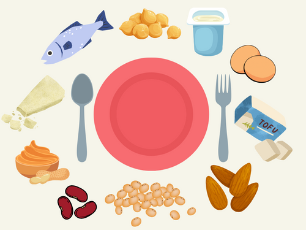

Par quoi remplacer la viande ?
Enjeu environnemental, bien-être animal, raison économique, santé... De plus en plus de personnes souhaitent remplacer la viande dans leur assiette. Par quels aliments la remplacer ? L'apport en protéines sera-t-il suffisant ?
Remplacer réguliérement la viande, c'est facile !
Pour faire simple : le corps a besoin de protéines. Un adulte sédentaire a besoin de 0,8g/jour/kg de poids (par ex., un adulte de 70kg a besoin de 56g (70 x 0,8) de protéines par jour). Un sportif aura plutôt besoin de 1,5g/jour/kg. Je vous laisse faire le calcul pour vous.
La viande est un des aliments fournissant le plus de protéines et d'acides aminés essentiels. Contrairement aux idées reçues, c'est loin d'être la seule, bien d'autres aliments en sont riches. Il suffit de varier, de les combiner, pour équilibrer ses repas.
A titre de comparaison, voici l'apport en protéines pour 100g d'aliment :
- Un steak de boeuf : 21g
- Un morceau de veau : 37g
- Un filet de poulet : 26g

Quels aliments peuvent remplacer la viande ?
Les poissons gras
Riches en bonnes graisses, ils sont aussi très riches en protéines :
- Du saumon : 21g
- Des sardines : 25g
- Du thon : 30g
- De la morue salée : 47g (la numéro 1 toute catégorie)
Les légumineuses
Une alternative végétale hyper économique :
- Fèves: 26g
- Haricots blancs : 19g
- Haricots rouges : 24g
- Lentilles vertes : 25g
- Lentilles corail : 27g
- Pois chiches (mes préférés) : 19g
- Pois cassés : 24g
Le tofu et le seitan
L'un est issu du soja, l'autre du blé. Ces susbtituts, au goût neutre, remplacent aisément la viande dans les plats relevés :
Les produits laitiers et les oeufs
Côté yaourt, C'est surtout le fromage blanc qui est intéressant ici car il a également un côté rassasiant. Les yaourts nature ou à la grecque par exemple ont un apport bien inférieur en protéines. Côté fromage, chacun a sa propre composition et donc un taux de protéines différent. Riches en calories et en lipides, une consommation excessive est déconseillée. Je vous ai listé quelques principaux fromages :
- Oeuf : 6g (par oeuf)
- Fromage blanc : 8g
- Parmesan : 36g (le champion des fromages !)
- Comté/gruyère/emmental : 28g
- Mozzarella : 22g
- Camembert : 20g
Les fruits à coque
Riches en fibres et antioxydants, les fruits à coque sont des alliés précieux qui apportent du pep's et de l'originalité à nos plats.
- Cacahuètes : 25g
- Amandes : 21g
- Pistaches : 18g
- Noix de cajou : 17g
- Noix : 15g
L'aliment auquel on ne s'attend pas !
Le beurre de cacahuètes ! Avec 23g de protéines pour 100g, cet aliment allie son utilité au plaisir du goût. Attention quand même à ne pas en abuser, il est riche en lipides.
Les aliments transformés type steaks veggie
Avec l'essor de la tendance veggie, bon nombre d'industriels se sont mis à créer des produits transformés rappelant, en tous points, leurs équivalents carnés : steak haché, merguez, saucisses, etc... le tout en végétal... et en additifs ! La plupart de ces produits apporte un taux de protéines équivalent à celui de la viande, mais comme tous les produits ultra-transformés, les additifs, colorants, exhausteurs de goût et autres, font partie de leur composition. Leur consommation doit rester exceptionnelle.
Comment composer une assiette équilibrée ?
Pour équilibrer vos plats, le principe général est d'avoir dans l'assiette : 50% de légumes, 25% de protéines, 25% de féculents.
Les féculents complets sont privilégiés. Et pour varier des pâtes et du riz, vous avez aussi le blé, le quinoa, l'orge, l'épautre, etc... Rendez vous dans les rayons "pâtes-riz" des supermarchés, pour découvrir l'assortiment disponible. De nombreuses marques ont dévéloppé leur gamme, offrant une diversité de saveurs aux consommateurs.
L'important dans l'alimentation est de manger équilibré bien sûr, mais surtout de manger varié. La routine alimentaire est certainement l'une des pires erreurs. Le corps a besoin d'un peu de tout.
Varier son alimentation, c'est aussi varier les plaisirs. Ou comment lier la nécessité de s'alimenter au plaisir de se régaler.
Retrouvez ici mes idées recettes gourmandes.